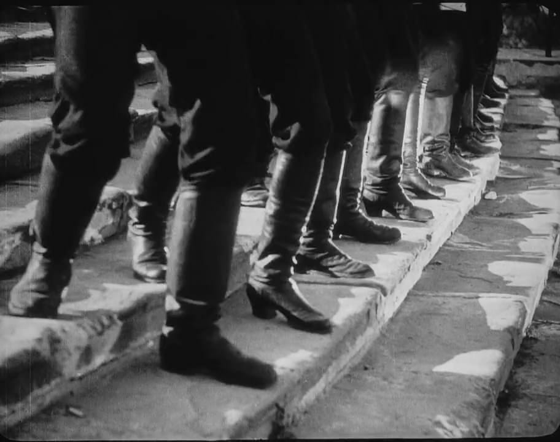

O Couraçado Potemkin: montagem, choque e propaganda
O COURAÇADO Potemkin. Direção: Serguei Eisenstein. Produção: Jacob Bliokh. Roteiro: Nina Agadzhanova. Moscou: Goskino, 1925. 1 filme (75 min), mudo, p&b. Título original: Bronenosets Potyomkin.
O Couraçado Potemkin (Bronenosets Potyomkin) é um filme soviético dirigido pelo renomado Serguei Eisenstein e produzido pela Goskino, estúdio estatal que mais tarde daria origem à Mosfilm. O filme apresenta uma versão dramatizada de uma rebelião ocorrida em 1905 (durante a primeira revolução russa, doze anos antes da Revolução de Outubro), onde os tripulantes do navio de guerra Potemkin se rebelam contra seus oficiais.
O filme foi responsável por trazer aos radares o poderio do cinema soviético. É extremamente propagandista da ideologia marxista-leninista que ali reinava no lançamento do filme (1925), mas a película vai muito além de uma propaganda e merece destaque pela extrema bem-feitura: é uma aula de cinema construtivista em seu cerne, ambicionando testes de edição e montagem nunca antes vistos no cinema da época.
Antes de entendermos o filme a fundo, é preciso entender a história do diretor e até mesmo em que ponto estava o cinema. No ano de seu lançamento, o cinema já dispunha de tecnologias e técnicas que permitiam a construção e montagem de uma narrativa coesa, e contava muito com a chamada “edição de continuidade”, isto é, quando o diretor conduz a montagem tentando manter a realidade de forma contínua e linear, da forma mais natural possível, onde o corte passa despercebido e a montagem segue fielmente a ordem das ações. Podemos ver isso, por exemplo, em filmes como Nosferatu, The Gold Rush, Sherlock Jr. e muitos outros da época – principalmente ocidentais.
Na União Soviética, Lenin acreditava fielmente no cinema como uma arte primária para a sociedade, acima de outras como a pintura e a música. A frase atribuída a ele resume bem: “de todas as artes, para nós a mais importante é o cinema”. Isso porque uma das ideias principais da revolução era a própria consolidação do poder e a centralização do fluxo de informações, e o cinema, falando principalmente por imagens, alcançava uma população em grande parte analfabeta, espalhada por um território enorme e com dezenas de línguas. Por isso, a indústria foi nacionalizada e foi então criada a Escola Estatal de Cinema de Moscou. Enquanto isso, a produção se voltava para filmes curtos de propaganda, os chamados agitki (de agitprop, agitação e propaganda). Também eram importados filmes ocidentais, como os de Griffith, que eram cortados e reeditados como forma de estudo de caso, estabelecendo uma base de edição e montagem extremamente aguçada em comparação ao restante do globo. O efeito Kuleshov foi uma das heranças desse momento: o mesmo rosto neutro de um ator, intercalado com um prato de sopa, um caixão ou uma criança, era lido pelo público como fome, luto ou ternura.
É nesse cenário que surge Eisenstein. Nascido em Riga, em 1898, ele estudou engenharia antes de trocar tudo pelo teatro, no Proletkult, e em 1923 publicou o texto “Montagem de atrações”, defendendo que cada momento do espetáculo deveria atingir o espectador como um choque. Ele também passou pela escola da reedição: ajudou Esfir Shub a remontar Dr. Mabuse, de Fritz Lang, para o público soviético. Sua estreia no longa veio com A Greve (1925), e no mesmo ano veio o Potemkin, encomendado para os 20 anos da revolução de 1905. O roteiro original cobria a revolução inteira, mas Eisenstein acabou reduzindo tudo a um único episódio: o motim do couraçado.
Com isso em mente, finalmente podemos retornar ao filme em questão. Com as lições herdadas de Kuleshov, Eisenstein criou novos termos de montagem, que só formalizaria em texto em 1929, no ensaio “Métodos de montagem”. São eles: montagem métrica, rítmica, tonal, atonal e intelectual. Ou seja, o filme coloca em prática uma teoria que ainda nem existia no papel. No filme, o que vemos com maior destaque é a montagem rítmica, mas ainda no couraçado já vemos a montagem trabalhando a favor da revolta. Na demonstração de uma carne podre, o médico usa o próprio pincenê como lupa, e o close nos vermes faz o espectador ver melhor a situação em que ali vivem. Já na cena do marinheiro que quebra o prato com a inscrição “O pão nosso de cada dia”, vemos cortes rápidos e repetidos: o mesmo gesto aparece em vários planos sobrepostos, esticando uma ação de um segundo até ela ganhar o peso de uma revolta.
Mas a cena onde conseguimos ver a montagem rítmica com mais clareza é justamente a da escadaria de Odessa. Uma cena que poderia ser facilmente resolvida em 2 minutos se estende por quase 7, onde vemos perspectivas diferentes ocorrendo ao mesmo tempo, histórias paralelas que demonstram diferentes tipos de emoções, criando tensões e expectativas paralelas no espectador, tudo dentro do mesmo acontecimento. As botas dos soldados descem a escada num compasso próprio, que atropela o ritmo dos cortes, e quando o carrinho de bebê começa a rolar, tudo acelera. A montagem paralela em si não era novidade, Griffith já a usava em Intolerância (1916). A maior diferença é que, além de se alternarem, os planos se chocam.
A montagem tonal também aparece, na sequência da névoa no porto durante o luto pelo marinheiro Vakulinchuk, exemplo usado pelo próprio Eisenstein: ali os planos se ligam pelo tom, pela luz e pela neblina, e não apenas por ação. E a intelectual tem seu embrião nos três leões de pedra, um dormindo, outro acordando e outro rugindo, que montados em sequência parecem um único leão se levantando, assim como o povo.
O filme é até hoje considerado parte do rol de filmes que todo cineasta deve assistir, e é difícil não ter essa visão do filme. Em 1958, na Exposição Universal de Bruxelas, críticos e historiadores de vários países o elegeram o melhor filme de todos os tempos. As técnicas e lições que podemos aprender com ele podem ser vistas em filmes contemporâneos, como no carrinho de bebê descendo a escadaria da estação em Os Intocáveis (Brian De Palma, 1987). Além disso, é uma peça de propaganda de extrema eficiência: ficou proibido no Reino Unido até 1954, e o próprio Goebbels o elogiou e pediu aos cineastas alemães um “Potemkin” nazista. O Couraçado Potemkin é um filme que não só pode, como deve ser visto por todos.